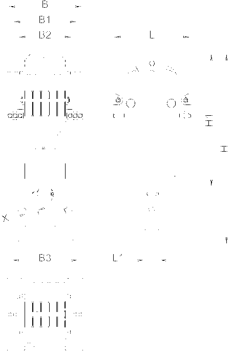
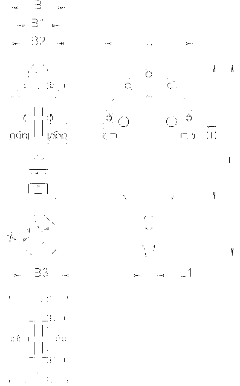
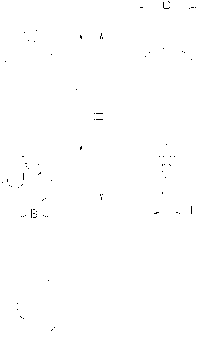

Unterflaschen/Lasthaken*
Benennung | Wert | |
|---|---|---|
L | Länge Unterflasche |
770 mm 2.53 ft |
L1 | Länge Haken |
190 mm 7.48 in |
B | Breite Unterflasche mit Zusatzgewichten |
1247 mm 4.09 ft |
B1 | Breite Unterflasche ohne Zusatzgewichten |
1027 mm 3.37 ft |
B2 | Breite Haken |
944 mm 3.1 ft |
H | Höhe Unterflasche mit Haken |
2230 mm 7.32 ft |
H1 | Höhe Unterflasche ohne Haken |
1480 mm 4.86 ft |
X | Maulweite |
156 mm 6.14 in |
Gewicht mit Zusatzgewichte |
3200 kg 7,055 lb | |
Gewicht ohne Zusatzgewichte |
2300 kg 5,071 lb | |
Maximale Einscherung | 22 | |
Seil Ø |
26 mm 1.02 in | |
Technische Daten Unterflasche ( 250 t (551,148 lb))
Benennung | Wert | |
|---|---|---|
L | Länge Unterflasche |
770 mm 2.53 ft |
L1 | Länge Haken |
170 mm 6.69 in |
B | Breite Unterflasche mit 4 Zusatzgewichten |
883 mm 2.9 ft |
B1 | Breite Unterflasche mit 2 Zusatzgewichten |
763 mm 2.5 ft |
B2 | Breite Unterflasche ohne Zusatzgewichten |
643 mm 2.11 ft |
B3 | Breite Haken |
842 mm 2.76 ft |
H | Höhe Unterflasche mit Haken |
2110 mm 6.92 ft |
H1 | Höhe Unterflasche ohne Haken |
1410 mm 4.63 ft |
X | Maulweite |
137 mm 5.39 in |
Gewicht mit 4 Zusatzgewichte |
3000 kg 6,614 lb | |
Gewicht mit 2 Zusatzgewichte |
2250 kg 4,960 lb | |
Gewicht ohne Zusatzgewichte |
1500 kg 3,307 lb | |
Maximale Einscherung | 15 | |
Seil Ø |
26 mm 1.02 in | |
Technische Daten Unterflasche ( 160 t (352,734 lb))

Fig. 290: Abmessungen Unterflasche ( 100 t (220,459 lb))
Fig. 290: Abmessungen Unterflasche ( 100 t (220,459 lb))
Benennung | Wert | |
|---|---|---|
L | Länge Unterflasche |
770 mm 2.53 ft |
L1 | Länge Haken |
132 mm 5.2 in |
B | Breite Unterflasche mit 4 Zusatzgewichten |
743 mm 2.44 ft |
B1 | Breite Unterflasche mit 2 Zusatzgewichten |
643 mm 2.11 ft |
B2 | Breite Unterflasche ohne Zusatzgewichte |
543 mm 1.78 ft |
B3 | Breite Haken |
672 mm 2.2 ft |
H | Höhe Unterflasche mit Haken |
1824 mm 5.98 ft |
H1 | Höhe Unterflasche ohne Haken |
1256 mm 4.12 ft |
X | Maulweite |
103 mm 4.06 in |
Gewicht mit 4 Zusatzgewichten |
2300 kg 5,071 lb | |
Gewicht mit 2 Zusatzgewichten |
1800 kg 3,968 lb | |
Gewicht ohne Zusatzgewichte |
1300 kg 2,866 lb | |
Maximale Einscherung | 11 | |
Seil Ø |
26 mm 1.02 in | |
Technische Daten Unterflasche ( 100 t (220,459 lb))

Fig. 292: Abmessungen Unterflasche ( 40 t (88,184 lb))
Fig. 292: Abmessungen Unterflasche ( 40 t (88,184 lb))
Benennung | Wert | |
|---|---|---|
L | Länge Unterflasche |
770 mm 2.53 ft |
L1 | Länge Haken |
100 mm 3.94 in |
B | Breite Unterflasche mit 4 Zusatzgewichten |
500 mm 1.64 ft |
B1 | Breite Unterflasche mit 2 Zusatzgewichten |
400 mm 1.31 ft |
B2 | Breite Unterflasche ohne Zusatzgewichte |
300 mm 11.81 in |
B3 | Breite Haken |
303 mm 11.93 in |
H | Höhe Unterflasche mit Haken |
1628 mm 5.34 ft |
H1 | Höhe Unterflasche ohne Haken |
1150 mm 3.77 ft |
X | Maulweite |
75 mm 2.95 in |
Gewicht mit 4 Zusatzgewichten |
1500 kg 3,307 lb | |
Gewicht mit 2 Zusatzgewichten |
1100 kg 2,425 lb | |
Gewicht ohne Zusatzgewichte |
700 kg 1,543 lb | |
Maximale Einscherung | 3 | |
Seil Ø |
26 mm 1.02 in | |
Technische Daten Unterflasche ( 40 t (88,184 lb))

Fig. 294: Abmessungen Lasthaken ( 12.5 t (27,557 lb))
Fig. 294: Abmessungen Lasthaken ( 12.5 t (27,557 lb))
Benennung | Wert | |
|---|---|---|
L | Länge Haken |
71 mm 2.8 in |
B | Breite Haken |
217.5 mm 8.56 in |
H | Höhe Lasthaken mit Haken |
1120 mm 3.67 ft |
H1 | HöheLasthaken ohne Haken |
750 mm 2.46 ft |
D | Lasthaken Ø |
400 mm 1.31 ft |
X | Maulweite |
50 mm 1.97 in |
Gewicht |
600 kg 1,323 lb | |
Maximale Einscherung | 1 | |
Passend für Taschenschloss für Seil Ø | 23 mm (0.91 in) bis 26 mm (1.02 in) | |
Technische Daten Lasthaken ( 12.5 t (27,557 lb))